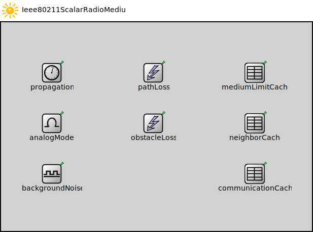

Package: inet.physicallayer.wireless.ieee80211.packetlevel
Ieee80211ScalarRadioMedium
compound moduleThis radio medium model uses scalar transmission power in the analog representation. It must be used in conjunction with the ~Ieee80211ScalarRadio model.
<b>See also:</b> ~Ieee80211ScalarRadio, ~Ieee80211ScalarTransmitter, ~Ieee80211ScalarReceiver, ~ScalarAnalogModel.
Inheritance diagram
The following diagram shows inheritance relationships for this type. Unresolved types are missing from the diagram.
Used in
| Name | Type | Description |
|---|---|---|
| AggregationShowcase | network | (no description) |
| AnalogModelShowcaseDistanceNetwork | network | (no description) |
| AnnotationShowcase | network | (no description) |
| AntennaDirectionalSelectivityExample | network | (no description) |
| AntennaOrientation | network | (no description) |
| BlockAckShowcase | network | (no description) |
| CommunicationCacheExample | network | (no description) |
| ComplexConfiguratorNetwork | network | (no description) |
| ConfiguratorC | network | (no description) |
| ConfiguratorD | network | (no description) |
| ConfiguratorE | network | (no description) |
| CrosstalkShowcaseOneScalarRadioMediumModule | network | (no description) |
| CrosstalkShowcaseTwoScalarRadioMediumModules | network | (no description) |
| DataLinkVisualizerActivityLevelShowcase | network | (no description) |
| DataLinkVisualizerEnablingWirelessShowcase | network | (no description) |
| DataLinkVisualizerMobileShowcase | network | (no description) |
| DirectionalAntennasShowcase | network | (no description) |
| DsdvNetwork | network |
TODO |
| DYMONetwork | network |
TODO |
| DynamicRadioNetwork | network | (no description) |
| ErrorRateShowcase | network | (no description) |
| ErrorRateTest | network | (no description) |
| FilteringExampleNetwork | network | (no description) |
| FragmentationShowcase | network | (no description) |
| GPSRNetworkManual | network | (no description) |
| GPSRNetworkRandom | network |
TODO |
| HandoverNetwork | network | (no description) |
| HandoverShowcase | network | (no description) |
| HiddenNode | network | (no description) |
| Ieee80211VisualizationAdvancedFeaturesShowcase | network | (no description) |
| Ieee80211VisualizationDisplayingAssociationsShowcase | network | (no description) |
| Ieee80211VisualizationSignalLevelsShowcase | network | (no description) |
| Ieee80211VisualizationVisualizingHandoverShowcase | network | (no description) |
| InstrumentShowcase | network | (no description) |
| InterfaceTableVisualizationAdvancedFeaturesShowcase | network | (no description) |
| Lan80211 | network | (no description) |
| Lan80211ac | network | (no description) |
| MacTest | network | (no description) |
| ManetprotocolsShowcaseA | network | (no description) |
| ManetprotocolsShowcaseB | network | (no description) |
| MediumActivityDisplayingSignalsTransmissionsReceptionsShowcase | network | (no description) |
| MediumActivityInterferingSignalsShowcase | network | (no description) |
| MediumActivityMultipleNodesShowcase | network | (no description) |
| mIPv6Network | network | (no description) |
| MultiRadio | network |
Models a network with several hosts. Each host may contain one or more radios. Nodes are using adhoc routing to pass information. |
| MultiRadio | network | (no description) |
| MultiRadioShowcase | network | (no description) |
| Net80211 | network | (no description) |
| NetworkPathMobileShowcase | network | (no description) |
| NetworkPathRIPShowcase | network | (no description) |
| ObjectCacheTest | network | (no description) |
| ObstacleIntersectionTest | network | (no description) |
| ObstacleTest | network | (no description) |
| PacketDropArpResolutionFailedShowcase | network | (no description) |
| PacketDropMacRetryLimitReachedShowcase | network | (no description) |
| PacketDropQueueOverflowShowcase | network | (no description) |
| PathLossShowcase | network | (no description) |
| PcapRecordingShowcase | network | (no description) |
| PhysicalLinkVisualizerEnablingShowcase | network | (no description) |
| PhysicalLinkVisualizerFilteringShowcase | network | (no description) |
| PhysicalLinkVisualizerMobileShowcase | network | (no description) |
| PowerConsumptionShowcase | network | (no description) |
| PowerNetwork | network | (no description) |
| QosShowcase | network | (no description) |
| QosThroughput | network | (no description) |
| QosThroughput | network | (no description) |
| RateControlShowcase | network | (no description) |
| RateControlTest | network | (no description) |
| RoutingTableVisualizationDynamicShowcase | network | (no description) |
| Scenario | network | (no description) |
| StatisticVisualizationPacketErrorRateShowcase | network | (no description) |
| StatisticVisualizationPingRttShowcase | network | (no description) |
| StylingShowcase | network | (no description) |
| SubmoduleInformationVisualizationShowcase | network | (no description) |
| Synchronized | network | (no description) |
| Throughput | network | (no description) |
| Throughput | network | (no description) |
| Throughput | network | (no description) |
| Throughput | network | (no description) |
| TransportPathVisualizerSimpleWirelessShowcase | network | (no description) |
| TxopShowcase | network | (no description) |
| WiredAndWirelessHostsWithAP | network | (no description) |
| WirelessNetWith2DHCP | network | (no description) |
| WirelessNetWithDHCP | network | (no description) |
Extends
| Name | Type | Description |
|---|---|---|
| Ieee80211RadioMedium | compound module |
This radio medium model is part of thee IEEE 802.11 physical layer model. It must be used in conjunction with the ~Ieee80211Radio model or other derived models. |
Parameters
| Name | Type | Default value | Description |
|---|---|---|---|
| physicalEnvironmentModule | string | "physicalEnvironment" |
module path of the physical environment model |
| signalAnalogRepresentation | string | "scalar" | |
| rangeFilter | string | "" |
filter parameters that control when signals are sent to receiver radios |
| radioModeFilter | bool | false |
when enabled the radio medium doesn't send signals to a radio if it's neither in receiver nor in transceiver mode |
| listeningFilter | bool | false |
when enabled the radio medium doesn't send signals to a radio if it listens on the channel in incompatible mode (e.g. different carrier frequency and bandwidth, different modulation) |
| macAddressFilter | bool | false |
when enabled the radio medium doesn't send signals to a radio if it the destination mac address differs |
| recordTransmissionLog | bool | false |
logging parameters |
| recordReceptionLog | bool | false |
when enabled the medium writes one line per reception into the communication log file |
Properties
| Name | Value | Description |
|---|---|---|
| class | RadioMedium | |
| display | i=misc/sun |
Signals
| Name | Type | Unit |
|---|---|---|
| radioRemoved | ||
| signalDepartureStarted | ||
| radioAdded | ||
| signalArrivalStarted | ||
| signalAdded | ||
| signalDepartureEnded | ||
| signalRemoved | ||
| signalArrivalEnded |
Unassigned submodule parameters
| Name | Type | Default value | Description |
|---|---|---|---|
| neighborCache.refillPeriod | double |
Source code
// // This radio medium model uses scalar transmission power in the analog // representation. It must be used in conjunction with the // ~Ieee80211ScalarRadio model. // // @see ~Ieee80211ScalarRadio, ~Ieee80211ScalarTransmitter, // ~Ieee80211ScalarReceiver, ~ScalarAnalogModel. // module Ieee80211ScalarRadioMedium extends Ieee80211RadioMedium { parameters: analogModel.typename = default("ScalarAnalogModel"); backgroundNoise.typename = default("IsotropicScalarBackgroundNoise"); }File: src/inet/physicallayer/wireless/ieee80211/packetlevel/Ieee80211ScalarRadioMedium.ned
 This documentation is released under the Creative Commons license
This documentation is released under the Creative Commons license